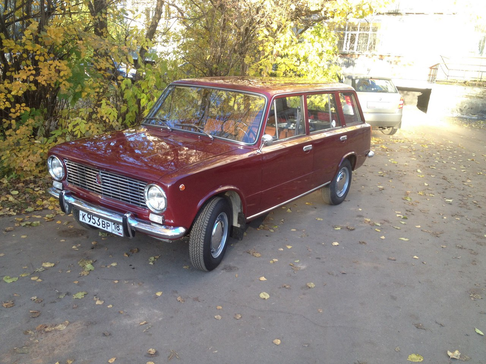
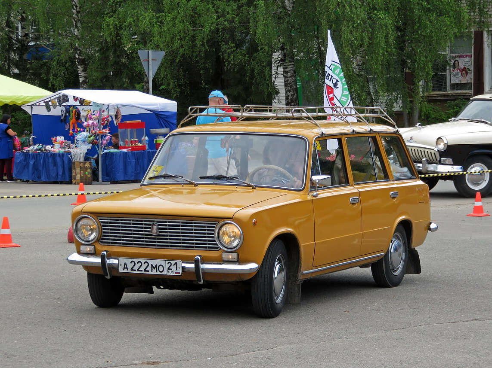
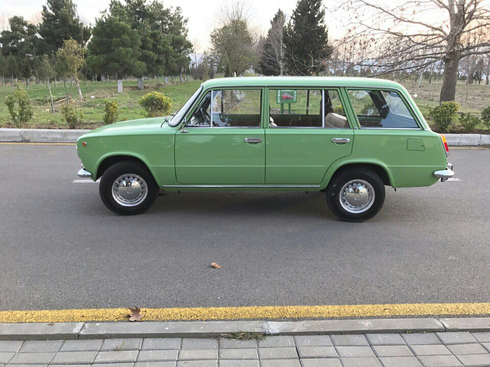
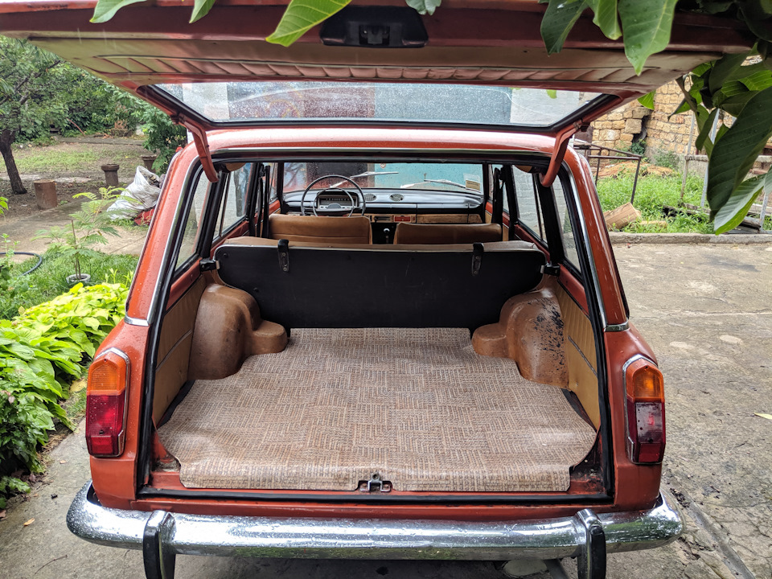
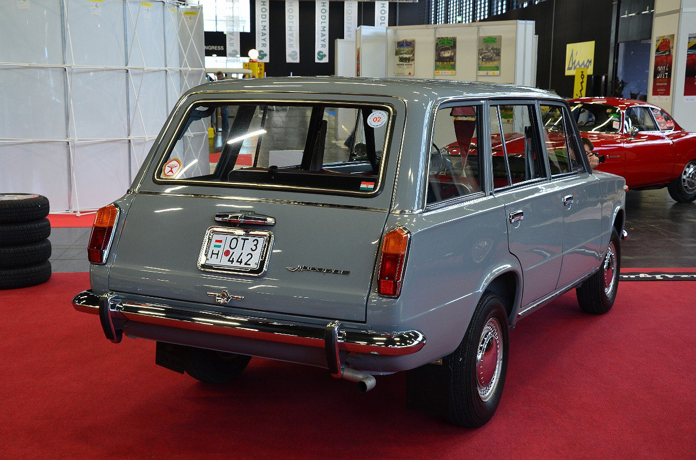

ВАЗ-2102 «Жигули» — советский заднеприводный автомобиль с кузовом типа универсал. Серийно выпускался на Волжском автомобильном заводе с 21 сентября 1971 по 1986 год.
Является лицензионной версией Fiat 124 Familiare, с многочисленными отличиями, аналогичными базовой модели ВАЗ-2101. Первый автомобиль ВАЗ-2102 сошёл с конвейера Волжского автомобильного завода в 1971 году. Затем после начала выпуска преемницы — «четвёрки» ВАЗ-2104 в 1984 году обе машины ещё год выпускались одновременно вплоть до снятия «двойки» с производства в 1986 году (156 автомобилей выпущено в 1986 году). За это время было выпущено 666 989 «универсалов» первого поколения Волжского автомобильного завода.
Новая модель была во многом унифицирована с базовым седаном ВАЗ-2101 Приборная панель и рабочее место водителя идентичны таковым у ВАЗ-2101. Кромка двери багажника доведена до бампера и находится вровень с уровнем пола, что упрощает операции по погрузке и разгрузке. Сплошное заднее сиденье раскладываемое, что позволяет получить горизонтальную грузовую площадку. Номерной знак находится на задней двери, задние фонари расположены вертикально. Технический уровень универсалов в то время отличала слабая герметизация салона от пыли со стороны задней двери и паров бензина через горловину бензобака. Для большего по массе грузопассажирского ВАЗ-2102 пружины подвески и амортизаторы были дополнительно усилены, что позволило сохранить грузоподъемность в 250 кг с двумя пассажирами (или 60 кг с пятью пассажирами) при том, что собственная масса автомобиля в сравнении с седаном ВАЗ-2101 возросла на 55 кг.
Автомобиль оснащался бензиновым двигателем мощностью 64 л. с., работающим на бензине АИ-93. Вследствие того, что автомобиль имел большую грузоподъёмность, нежели седан, он комплектовался колесами с резиной большей ширины. 165мм против 155мм у ВАЗ-2101. Это изменение повлекло увеличение диаметра колеса, которое компенсировали путем изменением главной пары с 4.3 до 4.44.
В 1978 году был начат выпуск модификации ВАЗ-21021 с четырёхцилиндровым 69-сильным двигателем ВАЗ-21011.
Она предназначалась преимущественно для экспорта, так же как и ВАЗ-21023 с карбюраторным двигателем ВАЗ-2103 мощностью 77 л. с.
В экспортном исполнении автомобиль ВАЗ-2102 оборудовали стеклоочистителем и омывателем стекла задней грузовой двери, сиденьями от ВАЗ-2106 с подголовниками.
В дальнейшем завод провёл следующую модернизацию автомобилей:



